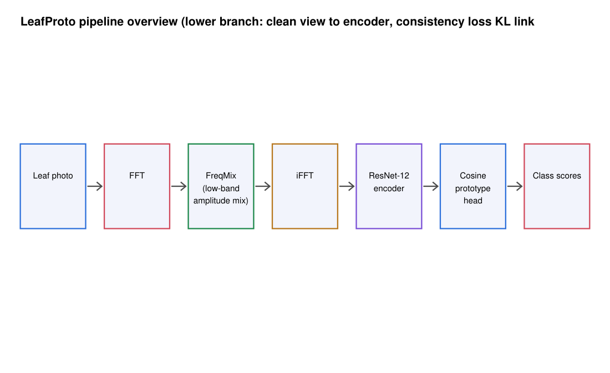

Plant Vision Lab, Hanbit University
Diagnosing plant disease from field photos usually has only a handful of labeled examples per disease. We present LeafProto, a few-shot classifier for leaf photos that extends the ProtoClass prototype network in three ways: a cosine similarity head with a learnable scale, a frequency-domain augmentation called FreqMix that mixes low-frequency Fourier amplitude between images while keeping phase, and a consistency loss that aligns predictions on clean and mixed views. On leafdoc_fs, a 54-class dataset of 18,420 field photos, LeafProto reaches 87.4% 5-way 5-shot accuracy, 3.8 points above FastAdapt and 6.5 points above ProtoClass. In our ablation, removing FreqMix causes the largest drop.

Accuracy (%) on the 12 novel test classes of leafdoc_fs, 5-way episodes, 15 queries per class. Mean ± 95% confidence interval over 600 test episodes.
| Method | 1-shot | 2-shot | 5-shot | 10-shot |
|---|---|---|---|---|
| Finetune | 52.3 ± 0.9 | 61.8 ± 0.8 | 72.5 ± 0.7 | 79.1 ± 0.6 |
| ProtoClass | 60.4 ± 0.9 | 70.2 ± 0.8 | 80.9 ± 0.6 | 85.0 ± 0.5 |
| FastAdapt | 64.8 ± 0.9 | 73.5 ± 0.8 | 83.6 ± 0.6 | 87.2 ± 0.5 |
| LeafProto (ours) | 69.7 ± 0.9 | 78.3 ± 0.7 | 87.4 ± 0.5 | 90.6 ± 0.4 |
Ablation (5-shot). Full LeafProto 87.4. Without FreqMix 84.0 (-3.4). Euclidean head instead of cosine 85.2 (-2.2). Without consistency loss (lambda_cons = 0) 86.3 (-1.1). FreqMix over the full spectrum (beta = 1.0) 85.6 (-1.8).
Draft v2 of the paper is available as leafproto_draft_v2.pdf. Known limitations: one dataset, 84x84 resolution, no cross-species transfer, and a fixed beta.
@misc{park2026leafproto,
title = {LeafProto: Few-Shot Plant Disease Classification with Frequency-Domain Mixing and a Cosine Prototype Head},
author = {Park, Hyunwoo and Kim, Seoyeon and Lee, Doyun and Choi, Jimin and Jung, Minjun},
year = {2026},
note = {Draft, Plant Vision Lab, Hanbit University},
url = {https://github.com/plant-vision-lab/leafproto}
}